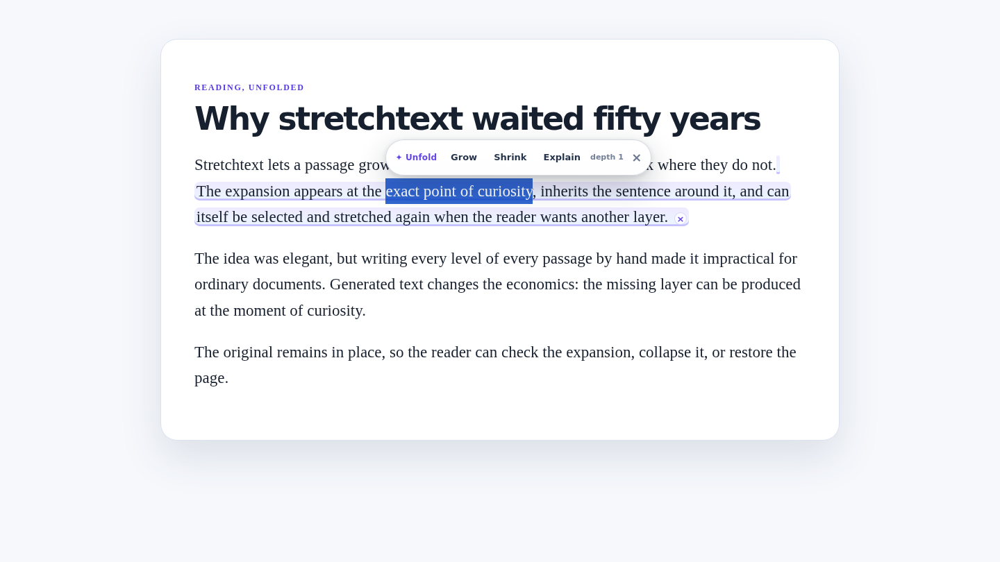

Grow in place
Expand a phrase once, then expand part of the expansion again, up to your chosen depth.
Stretchtext for any web page · Bring your own Pollen
Select a dense sentence and Grow it. Select a wall of text and Shrink it. Select a term and Explain it. Unfold inserts the result into the page, visibly marks it, and can restore the original at any time.
Chromium and Firefox developer/unpacked install. Generation is paid with the reader's own Pollinations balance.

Expand a phrase once, then expand part of the expansion again, up to your chosen depth.
Get the gist first. Inline shrink keeps the original behind one toggle; long-passage cards can hide or reveal it.
Glosses use the surrounding passage to choose the intended sense, and admit it when context is not enough.
Only Unfold's background worker can read the connected key. Content scripts receive finished text, never credentials.
Interactive concept demo
This page demo uses canned text and makes no API call. In the installed extension, the same controls appear beside real selections on article pages and call Pollinations with your connected wallet.
In 1967, Ted Nelson imagined stretchtext: prose that could grow where a reader wanted more detail and shrink back where they did not. The idea was elegant, but writing every level of every passage by hand made it impractical for ordinary documents.
Generated text changes the economics. A reader no longer needs the author to predict every question in advance; the missing layer can be produced at the moment of curiosity, while the original remains available for checking.
Choose Grow, Shrink or Explain.
Install
chrome://extensions (or the equivalent extensions page).about:debugging#/runtime/this-firefox.manifest.json.Privacy
The reader. Unfold uses Pollinations BYOP/Device Flow or a key the reader supplies, so each transformation is charged to that reader's Pollen balance.
No. That would be expensive and invasive. It works passage by passage, at the exact point where the reader asks for more or less.
It is visibly marked, collapsible and removable. Shrink keeps the original one click away, and Unfold prompts models not to invent citations or facts unsupported by the supplied context.
The default is DeepSeek V4.1 Flash, with GPT-5.4 Nano and GLM-5.3 Flash presets plus a custom Pollinations model ID field.